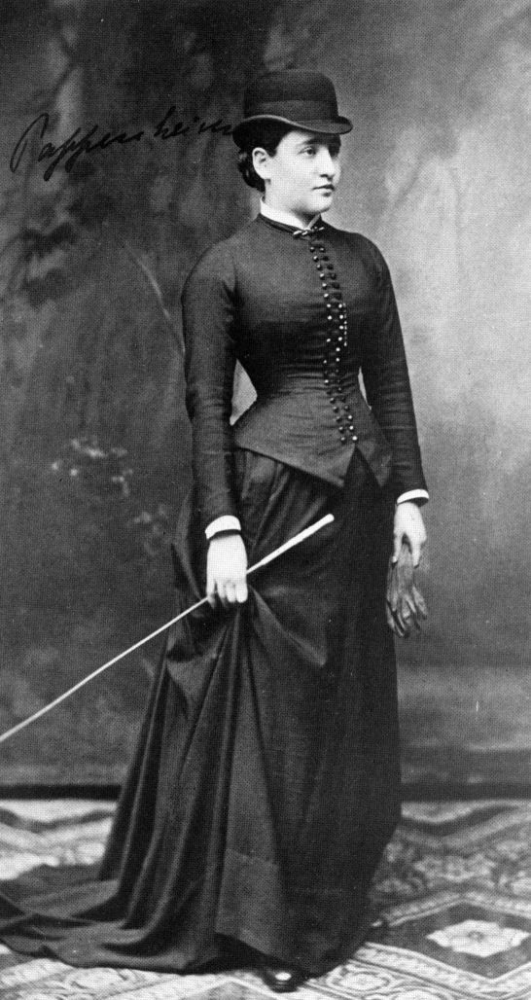

ἀγάλματα θεῶν
Platon, Şölen 215b
I
Aktarım kavramı, psikanaliz tarihinde, bir başarısızlığın içinden doğmuştur. 1880’lerin başında Josef Breuer’in Anna O.’yu tedavisi, “konuşma tedavisi”nin doğduğu vaka olarak bilinir; ama aynı tedavi, aniden ve açıklanmadan sona ermiştir. Freud’un biyografi yazarı Ernest Jones’un 1953’te aktardığı anlatıya göre, Breuer hastasının kendisine yönelik yoğun duygularından ve bu duyguların karısında uyandırdığı kıskançlıktan ürkerek tedaviyi bırakmış, hasta da hayalî bir doğum sancısı yaşamıştır.1 Bu anlatı sonraki araştırmalarla büyük ölçüde sorgulanmıştır; ama psikanalitik efsanedeki yeri, Freud’un dikkatini çeken soruyu iyi özetler: Hastanın hekimine duyduğu bu yoğun duygular nedir ve onlarla ne yapılmalıdır?


Anna O.’nun gerçek adı Bertha Pappenheim’dı. 1859’da Viyana’da varlıklı bir Yahudi ailenin kızı olarak doğmuş, 1880’de ölümcül hastalığa yakalanan babasına bakarken ağır belirtiler geliştirmişti: felçler, görme bozuklukları, öksürük nöbetleri, bir süre Almanca konuşamayıp yalnızca İngilizce konuşabilmesi. Breuer onu bir buçuk yıl boyunca neredeyse her gün ziyaret etti. Hasta akşamları bir tür kendi kendine dalınan hipnotik bir hâle giriyor, o günün ve geçmişin sahnelerini anlatıyor, anlattıkça belirtilerinden bazıları geçiyordu. Bu yönteme kendisi, İngilizce iki ad vermişti: talking cure, konuşma tedavisi, ve şakayla karışık chimney sweeping, baca temizliği.2 Psikanalizin adı daha sonra Freud tarafından konacaktı; ama yönteminin ilk adı, bir hastanın, bir genç kadının, kendi dilini yitirdiği günlerde başka bir dilde bulduğu bir ifadeydi.
Pappenheim’ın sonraki hayatı, vaka anlatısının bıraktığı “hasta” imgesini kökten değiştirir. 1880’lerin sonunda Frankfurt’a yerleşti, bir Yahudi kız yetimhanesinin yöneticisi oldu, Mary Wollstonecraft’ın Kadın Haklarının Savunusu’nu Almancaya çevirdi, Paul Berthold takma adıyla öyküler ve oyunlar yazdı, 1904’te Yahudi Kadınlar Birliği’ni kurdu ve hayatını kadın ticaretine karşı mücadeleye adadı. 1936’da öldüğünde Almanya’nın önde gelen sosyal reformcularından biri olarak anılıyordu; 1954’te Federal Almanya, “İnsanlığın Yardımcıları” dizisinde onun adına bir pul bastı.3 Aktarımın ilk sahnesindeki kadın, psikanalizin tarihine bir vaka olarak girmiş, ama kendi tarihini başka bir yerde, kendi sözüyle yazmıştı.
Freud bu duygularla ilk kez, 1895’te Breuer ile birlikte yayımladığı Histeri Üzerine Çalışmalar’ın psikoterapiye ayrılmış son bölümünde açıkça yüzleşir. Hastalarının bazen hekime yönelik, kendi hayatlarındaki başka figürlerden kaynaklanan istekler ve duygular geliştirdiğini fark eder ve bu olguya bir “yanlış bağlantı” adını verir: Bir duygu, ait olduğu kişiden koparak, hekimin kişiliğine bağlanmıştır.4 Bu ilk dönemde aktarım, tedaviyi zorlaştıran, aşılması gereken bir engel olarak görülür.
Freud’un kendisi de aynı yıllarda, adını koymadığı bir aktarımın içindeydi. 1887’den 1904’e kadar Berlinli kulak burun boğaz hekimi Wilhelm Fliess ile yazıştığı yüzlerce mektupta, kuramının ilk taslaklarını, kendi düşlerini, kaygılarını, babasının ölümünden sonra giriştiği kendi kendini çözümleme çalışmasını ona anlattı. Fliess, bu yıllarda Freud için hem bir dost, hem bir okur, hem de onun bilmediği bir şeyi bildiği varsayılan bir muhataptı. Didier Anzieu, Freud’un kendi kendini çözümlemesini inceleyen büyük çalışmasında, bu ilişkinin bir analitik ilişkinin işlevini gördüğünü ve Freud’un ancak bu bağın içinde, onu sonunda kopararak, psikanalizi kurabildiğini gösterir.5 Kendi kendine yapılan bir analizin bile bir muhataba, onu dinleyen ve ondan bir şey bildiği varsayılan birine ihtiyacı vardı.
II
Freud’u kavramı ciddiye almaya iten asıl deneyim, 1900 sonbaharında tedavi ettiği ve vaka incelemesinde “Dora” adını verdiği on sekiz yaşındaki genç kadının analizidir. Dora, ailesinin yakın dostu Bay K.’nın kendisine yönelik cinsel yaklaşımlarından, babasının Bay K.’nın karısı Bayan K. ile sürdürdüğü ilişkiden ve babasının, bu ilişkiyi sürdürebilmek için kendisini adeta Bay K.’ya terk etmesinden yakınmaktadır. Freud Dora’nın iki rüyasını ayrıntıyla çözümler; ama genç kadın, analizin on birinci haftasında, yılın son günü, tedaviyi aniden sonlandırır.
Vakanın merkezinde bir tokat vardır. Dora on dört yaşındayken Bay K. onu ilk kez öpmeye çalışmış, iki yıl sonra da bir göl kıyısında yaptıkları bir yürüyüşte ona açıkça bir teklifte bulunmuştur. Dora tokadı tam da Bay K.’nın teklifine eklediği bir cümleden sonra atar: Bay K., karısından hiçbir şey almadığını, karısının onun için hiçbir şey ifade etmediğini söylemiştir.6 Lacan’ın okumasında tokadın nedeni bu cümledir. Dora’nın asıl ilgisi, kadınlığın sırrını taşıdığını düşündüğü Bayan K.’ya yönelmiştir; Bay K. ise Dora için bu kadına giden bir yol, bir aracıdır. Bay K. karısının onun için hiçbir şey olmadığını söylediği anda, Dora’nın bütün dünyasını bir arada tutan yapı çöker: Bayan K. hiçbir şey değilse, Dora da Bay K. için hiçbir şey değildir. Freud bu cümlenin ağırlığını o sırada duymamıştı; Dora’nın tedaviyi bırakması, belki de, aynı cümlenin Freud’un ağzından da duyulmasından kaçmaktı.
Freud, 1905’te yayımladığı vaka incelemesinin sonsözünde bu kopuşun nedenini kendi hatasında arar: Dora’nın kendisine yönelik duygularını, onun Bay K.’ya, hatta babasına yönelik duygularının bir tekrarı olarak zamanında fark edememiş ve yorumlayamamıştır. Dora, Bay K.’dan intikam almak ister gibi, tedaviyi terk ederek Freud’dan intikam almıştır.7 Lacan, 1951’de bu vaka üzerine yaptığı bir konuşmada Freud’un özeleştirisini bir adım daha ileri taşır. Freud’un, Dora’nın arzusunun asıl nesnesinin Bay K. değil, Bayan K. olduğunu, yani Dora’nın kadınlığa dair sorusunu bu kadının bedeninde sorduğunu görmediğini ve bu körlüğün, kendi önyargılarından ve kendi aktarımından kaynaklandığını gösterir.8 Lacan bu konuşmada vakayı bir dizi “diyalektik dönüşüm” olarak okur: Analizanın her şikâyeti, yeniden yorumlandığında, onu kendi payını sorgulamaya götüren bir hakikat anına dönüşür ve aktarım, bu diyalektiğin durduğu, analizin tıkandığı anda belirir.
III
Freud’un kavram için seçtiği Almanca kelime, Übertragung, gündelik dilde çok geniş bir anlam alanına sahiptir: bir mülkün bir başkasına devri, bir paranın bir hesaptan ötekine havalesi, bir metnin bir dilden ötekine çevirisi, bir hastalığın bulaşması, bir konserin radyodan yayını. Türkçedeki “aktarım” bu alanın büyük kısmını korur. Kavramın gücü de bu çok anlamlılıktan gelir: Aktarımda bir duygu bir kişiden ötekine devredilir, geçmiş bugüne havale edilir, eski bir sevginin dili yeni bir ilişkinin diline çevrilir. Dora deneyiminin ardından Freud, 1912’de yayımladığı Aktarımın Dinamiği’nde kavramı sistemli biçimde tanımlar. Her insan, yaşamının ilk yıllarında, sevgi koşullarını ve bu koşullarla tatmin edilen dürtüleri belirleyen bir tür kalıp, bir basma kalıbı edinir; bu kalıp hayat boyunca yeni insanlarla yeniden ve yeniden basılır. Analist de bu kalıbın basıldığı yeni bir yüzeydir. Aktarım hem olumlu, şefkat dolu bir biçimde hem de olumsuz, düşmanca bir biçimde ortaya çıkabilir; ve analizanın direncinin en güçlü silahı, tam da bu aktarımdır.9 İki yıl sonra, 1914’teki Hatırlamak, Tekrarlamak ve İşlemek’te Freud, aktarımı tekrarın bir “oyun alanı” olarak tanımlar: Analizanın hayatında tekrar eden şey analitik ilişkide de belirir; ama bu kez neredeyse tam bir serbestlik içinde, gözlenebilir ve konuşulabilir bir biçimde.
Freud’un 1915 tarihli Aktarım Aşkı Üzerine Gözlemler’i, aktarımın en çarpıcı ve en hassas biçimini ele alır: analizanın analiste âşık olması. Freud bu aşkın gerçek bir aşk olduğunu, ama analitik durumun kendisi tarafından kışkırtıldığını ve analizanın geçmişindeki aşk kalıplarını tekrarladığını vurgular. Analistin bu aşkı kendi kişisel çekiciliğine bağlamaması gerektiğini, bunun bir tür kibir olacağını ekler. Analistin bu aşka karşılık vermesi de onu bastırmaya çalışması da tedaviyi yok eder; analist onu ne reddetmeli ne de tatmin etmelidir, onu analiz edilecek bir malzeme olarak ele almalıdır.10 Freud bu tutumu, analitik tekniğin temel ilkelerinden biri olan yoksunluk ilkesiyle ilişkilendirir: Tedavi, analizanın arzusunun tatmin edilmediği, böylece söze dönüşmek zorunda kaldığı bir yoksunluk içinde yürütülmelidir.
Freud aynı yıllarda yazdığı teknik makalelerde aktarımın daha az romantik bir sahnesine, paraya da değinir. 1913’te tedavinin başlangıcı üzerine yazdığı metinde, analistin para meselelerini cinsel meselelerle aynı açıklıkla, aynı utanmazlıkla ele alması gerektiğini söyler; toplumun ikisine de aynı ikiyüzlülükle yaklaştığını hatırlatır.11 Freud’a göre ücretsiz tedavi, ilk bakışta cömert görünse de, analizanın direncini çoğu zaman artırır: Analizan, hiçbir şey ödemediği bir ilişkide kendini bir minnet borcunun içinde bulur ve bu borç, aktarımın konuşulabilir olmasını zorlaştırır. Seansın ücreti, analitik ilişkinin bir sevgi ya da bir lütuf ilişkisi olmadığını, bir çerçevenin içinde yürüyen bir çalışma olduğunu hatırlatır. Para, analizanın aktarımla kurduğu ilişkinin de bir göstergesine dönüşebilir: ödemeyi unutmak, geciktirmek, fazla ödemek, ücretin pazarlığını yapmak, analizin malzemesine dahil olan davranışlardır.
Freud aktarımın karanlık yüzünü de gördü. 1923’te Ego ve İd’de, bazı hastaların tedavide bir ilerleme kaydedildiği, bir yorumun doğru olduğu ya da bir belirtinin hafiflediği her seferinde daha kötüye gittiğini, iyileşmeye direnir gibi davrandığını yazar ve bu olguya olumsuz terapötik tepki adını verir.12 Bu hastalar için hasta kalmak, bilinçdışı bir suçluluk duygusunun ödettiği bir bedeldir; analistin her başarısı, onların gözünde, bu borcun ödenmesini engelleyen bir tehdit olarak yaşanır. Aktarım burada sevgi ya da düşmanlıktan çok, bir cezanın, bir borcun sahnesine dönüşür. Analist, analizanın iyileşmesini istediği ölçüde, onun bu cezayı sürdürme ihtiyacıyla çatışır.
IV
Freud’un öğrencileri aktarım kavramını farklı yönlere taşıdı. Budapeştli Sándor Ferenczi, daha 1909’da yazdığı “İçe Yansıtma ve Aktarım” makalesinde, aktarımın yalnızca analize özgü olmadığını, hipnozda, hekim ile hasta arasında, öğretmen ile öğrenci arasında, gündelik hayatın her köşesinde iş başında olduğunu gösterdi.13 Ferenczi’nin sonraki yılları, analistin soğuk ve mesafeli tutumunu sorgulayan cesur ama riskli deneylerle geçti; 1932’de tuttuğu klinik günlükte, analist ile analizanın birbirini karşılıklı olarak analiz ettiği bir yöntemi denediğini anlatır. Aynı yıl Wiesbaden’deki kongrede sunduğu “Yetişkinlerle Çocuk Arasında Dillerin Karışması” başlıklı konuşmasında, bir çocuğun şefkat dilini bir yetişkinin tutku diliyle yanıtlamanın açtığı travmayı tarif etti ve analistin de, analizanın şefkat talebini kendi diliyle yanıtlayarak bu travmayı tekrarlayabileceği konusunda uyardı.14
Londra’da Melanie Klein ise aktarımı daha da genişletti. 1952’de yazdığı makalede aktarımın, tek tek duyguların ya da figürlerin değil, “bütün durumların” geçmişten bugüne aktarılması olduğunu öne sürdü: Analizanın anlattığı her şey, bir arkadaşla yaşadığı bir tartışma, bir rüya, bir film, aynı zamanda analistle o anda yaşadığı ilişkinin bir ifadesi olarak duyulabilir.15 Bu görüş Kleincı geleneğin tekniğini derinden belirledi; aktarımın sürekli, her an yorumlanması bu geleneğin ayırt edici özelliği oldu. Lacan bu yaklaşımı, analizanın sözünü analistle ilişkiye indirgediği, analizi iki kişi arasındaki bir ayna oyununa dönüştürdüğü gerekçesiyle eleştirecekti.
V
Lacan, 1960–1961 yıllarında tamamen aktarıma ayırdığı sekizinci seminerinde, kavramı beklenmedik bir metin üzerinden okur: Platon’un Şölen’i. Diyalog, trajedi şairi Agathon’un ilk zaferini kutlamak için evinde verdiği bir şölende geçer; konuklar sırayla Eros’a övgüler söyler. Sokrates, Mantinealı kâhin kadın Diotima’dan öğrendiklerini anlatarak aşkın, sahip olmadığı şeyi arzulayan bir eksiklik olduğunu ortaya koyar. Tam o sırada kapı çalınır ve sarhoş Alkibiades, bir grup eğlence düşkünüyle birlikte içeri girer. Agathon’u taçlandırmaya gelmiştir; ama Sokrates’i görür görmez, ona olan aşkını herkesin önünde ilan eder.
Alkibiades’in konuşmasının merkezinde bir imge vardır. Sokrates, der, heykeltıraşların atölyelerinde satılan Silenos heykelciklerine benzer: Dışarıdan çirkin, kaba saba görünür; ama açıldığında, içinde tanrıların küçük ve değerli suretleri, agalmata bulunur.16 Alkibiades, Sokrates’in içinde bu değerli nesneyi gördüğü için ona âşıktır; ve onu elde etmek için kendi gençliğini, güzelliğini sunmaya hazırdır. Sokrates ise reddeder. Kendisinde Alkibiades’in sandığı değerli nesnenin bulunmadığını söyler ve onun aşkını, aslında orada bulunan bir başkasına, Agathon’a yönlendirir.
Alkibiades Sokrates’i anlatırken bir kelimeye dönüp durur: atopia. Sokrates’in tuhaflığı, yersizliği, hiçbir yere sığmaması; ne geçmişte ne de şimdiki zamanda ona benzeyen kimsenin bulunmaması.17 Lacan bu kelimeyi analistin konumunun anahtarı olarak alır. Analist de, analizanın hayatındaki hiçbir figüre bütünüyle benzemeyen, bir arkadaş, bir ebeveyn, bir öğretmen, bir sevgili olmayan, ama bunların hepsinin yerine geçebilen bir yerde durur. Bu yersizlik, aktarımın açılabilmesinin koşuludur: Analist belli bir yere sabitlenmediği ölçüde, analizan ona kendi hayatının bütün figürlerini yükleyebilir.
Sokrates’in Alkibiades’e verdiği yanıt da Lacan’ın gözünde bir yorumdur, hem de analitik bir yorum. Sokrates, Alkibiades’in uzun aşk itirafını dinledikten sonra, onun bütün bu konuşmayı aslında Agathon için yaptığını, Sokrates ile Agathon’un arasına girmek, Agathon’un Sokrates’i değil kendisini sevmesini sağlamak istediğini söyler.18 Alkibiades’in sözü kime söylendiğini sanıyorsa ona değil, bir üçüncüye yönelmiştir. Analitik yorum da çoğu zaman böyle işler: Analizanın analiste söylediği bir şeyin, aslında başka birine, hayatındaki bir başka figüre, bir başka sahneye yöneldiğini duyurur. Sokrates aşkı reddetmez, onu yönlendirir. Analist de aktarım aşkını reddetmez; onu, analizanın arzusunun geldiği ve gittiği yere doğru açar.
Lacan’a göre Sokrates’in tutumu, analistin tutumunun bir prototipidir. Analizan, analistin içinde değerli bir şey, kendi hakikatine dair bir bilgi, bir agalma olduğuna inanır ve onu bu yüzden sever. Analist bu sevgiyi ne kabul eder ne de reddeder; Sokrates gibi, analizanın arzusunu tatmin etmeyerek onu kendi arzusunun hakikatine doğru geri çevirir. Lacan bu seminerde aşkı bir metafor olarak da tanımlar: Aşk, sevilen konumundaki birinin, sevenin konumuna geçtiği o değişimin, o ikamenin adıdır. Lacan’ın en çok alıntılanan formüllerinden biri de bu bağlamda doğar: Sevmek, sahip olmadığın şeyi vermektir.19
VI
Lacan’ın aktarıma dair en bilinen formülü, 1964 tarihli on birinci seminerde, Psikanalizin Dört Temel Kavramı’nda ortaya çıkar: bildiği varsayılan özne, Fransızca sujet supposé savoir. Lacan’a göre aktarım, analizanın analiste, kendi semptomu, arzusu ve hakikati hakkında bir bilgiye sahip olduğunu varsaymasıyla başlar.20 Bu varsayım bir yanılgı değil, analitik sürecin başlamasını mümkün kılan bir koşuldur: Analizan, analistin bu bilgiye sahip olduğuna inandığı için konuşur. Ama analizin seyri içinde ortaya çıkan şey, aranan bilginin analistte değil, analizanın kendi bilinçdışında, kendi söyleminin içinde olduğudur. Lacan, 1967’de okulunun yapısına dair yazdığı önergede, bildiği varsayılan özneyi aktarımın bütünüyle etrafında döndüğü dayanak noktası olarak tanımlar.21
Aynı seminerin yapısı da bir şey söyler. Lacan psikanalizin dört temel kavramını, bilinçdışını, tekrarı, aktarımı ve dürtüyü, ayrı ayrı ele alır ve özellikle tekrar ile aktarımı birbirinden ayırmakta ısrar eder. Aktarım, Freud’un 1914’teki makalesinden beri, tekrarın analizdeki biçimi olarak düşünülüyordu; Lacan ise bu eşitlemenin aktarımı geçmişin mekanik bir yeniden üretimine indirgediğini söyler. Aktarımda yalnızca geçmiş tekrar etmez; şimdiki zamanda, analistin karşısında, yeni bir şey, bir sevgi, bir bilgi varsayımı, bir soru doğar. Lacan’ın deyişiyle aktarım, bilinçdışının gerçekliğinin sahnelenmesidir; ve bu sahnede oynanan şey, eski bir oyunun tekrarı olduğu kadar, ilk kez oynanan bir oyundur da.
Lacan aynı seminerde aktarımın iki yüzüne dikkat çeker. Aktarım bir yandan bilinçdışının açılmasını sağlar; öte yandan bir kapanma anı da olabilir. Analizan analisti sevmek ve onun tarafından sevilmek istediği anda, kendi arzusunun sorusundan uzaklaşabilir; sevgi, bu anlamda, bilmemeye bir davet de olabilir. Analistin işi, aktarımın bu iki yüzünü de tanıyabilmek ve onu, analizanın kendi sorusuna geri dönmesini sağlayacak biçimde kullanabilmektir.
Bu süreç sonunda nereye varır? Psikanaliz geleneğinde uzun süre aktarımın “tasfiyesinden” söz edildi: Analizin sonunda analizan, analiste yüklediği duygulardan arınacak, onu gerçek bir kişi olarak görecekti. Lacan bu ifadeyi beğenmez. Ona göre analizin sonunda aktarım tasfiye edilmez; bildiği varsayılan özne düşer. Analizan, analistin hiçbir zaman onun hakikatini bilmediğini, bilginin kendi sözünün içinde olduğunu fark eder; ve analist, analizanın arzusunu harekete geçiren o değerli nesnenin, agalma’nın yerinden çıkıp bir artığa, bir kalıntıya dönüşür. Lacan bu düşüşü 1967’deki önergesinde, analistin bir tür varlıksızlaşması olarak tarif eder: Analizanın gözünde bir zamanlar her şeyi bilen biri, sonunda, analizin içinden geçilen bir nesne, ardında bırakılan bir şey olur.22 Sokrates’in Alkibiades’e yaptığı da buydu: İçinde bir hazine taşıdığı sanılan Silenos heykelciği açıldığında, içinin boş olduğunu göstermek.
Aktarımın bir de sınırı vardır ve bu sınır en açık biçimde psikozun kliniğinde görülür. Psikotik bir öznede aktarım, bir sevgiye ya da bir bilgi varsayımına değil, bir erotomaniye ya da bir zulmedilme duygusuna dönüşebilir: Analist ona âşık olan ya da ona zarar vermek isteyen biri olarak algılanabilir. Lacan psikoz seminerinde bu yüzden analistlere, psikotik özneyle çalışırken yorumlamaktan, anlam vermekten, bilen konumunu üstlenmekten kaçınmalarını, kendilerini onun sözünün kâtipleri olarak düşünmelerini önerir.23 Bildiği varsayılan özne, nevrozda analizin motorudur; psikozda ise öznenin dünyasını işgal eden, ona hiçbir mesafe bırakmayan bir bilene dönüşebilir. Aktarımın biçimi, öznenin yapısına göre değişir ve analist, kendisine yerleştirildiği yeri her seferinde yeniden okumak zorundadır.
VII
Freud’dan sonraki psikanalitik gelenekte, analistin analizana yönelik duygusal tepkileri, yani karşı aktarım, önemli bir tartışma konusu oldu. Freud karşı aktarımı ilk başta analistin kendi analiziyle aşması gereken bir engel olarak görmüştü. 1950’de ise Paula Heimann, kısa ama son derece etkili bir makalede, analistin duygularının analizanın bilinçdışını anlamak için değerli bir araç olabileceğini öne sürdü; Heinrich Racker başta olmak üzere pek çok analist bu çizgiyi geliştirdi.24 Lacan ise bu yaklaşıma eleştirel yaklaşır. Ona göre analistin kendi duygularını analizanın bilinçdışının bir yansıması olarak yorumlaması, analitik ilişkiyi iki ben arasındaki Hayali bir ilişkiye indirgeme tehlikesi taşır. Lacan karşı aktarım yerine analistin arzusu kavramını önerir. Bu arzu, analistin kişisel istekleri değil, analitik sürecin kendisini sürdürmeye yönelik özgül bir arzudur: analizanın kendi arzusuyla karşılaşmasına imkân tanıma arzusu.
Freud 1925’te yazdığı kendi hayat öyküsünde, aktarımın analiz tarafından yaratılmadığını, analizin onu yalnızca açığa çıkarıp yalıttığını söyler: Aktarım, insan zihninin evrensel bir olgusudur ve her tıbbi etkinin başarısına karar verir, hatta her insanın çevresiyle ilişkilerine hükmeder.25 Bir hekime duyulan güven, bir öğretmene duyulan hayranlık, bir yöneticiye duyulan öfke, ilk kez karşılaşılan birine duyulan açıklanamaz yakınlık, aynı mekanizmanın gündelik görünümleridir. Analizi farklı kılan, bu olguyu kullanmakla yetinmemesi, onu konuşulabilir hâle getirmesidir. Aktarım, gündelik klinik çalışmada çok farklı biçimlerde ortaya çıkabilir: analistin bir sözüne aşırı anlam yüklemek ya da onun her söylediğini bir onay ya da eleştiri olarak duymak; analistin ne düşündüğünü sürekli merak etmek, onu memnun etmeye ya da ondan bir tepki almaya çalışmak; görüşmelere geç kalmak, onları unutmak ya da tersine, görüşmeler arasında analisti aşırı düşünmek; analistin tatile çıkması ya da bir görüşmeyi iptal etmesi karşısında beklenmedik derecede güçlü duygular yaşamak. Bu tepkilerin hiçbiri yanlış ya da utanılacak bir şey değildir; tersine, analitik çalışmanın en verimli malzemeleri arasındadır. Analizanın hayatındaki ilişkilerde tekrar eden şey analitik ilişkide belirdiği an, ilk kez konuşulabilir ve sorgulanabilir hâle gelir. Freud’un yoksunluk ilkesi ve psikologların meslek etiği, bu ilişkinin hiçbir koşulda analitik çerçevenin dışına taşınmamasını güvence altına alır; aktarımın sözün malzemesi olarak kalabilmesinin koşulu da budur.
Aktarım, psikanalizin hem en güçlü aracı hem de en büyük sınavıdır. Freud 1915’te analisti, son derece patlayıcı güçlerle çalıştığını bilen ve bu yüzden bir kimyager kadar dikkatli ve vicdanlı davranması gereken biri olarak tarif etmişti; bu patlayıcı güçlerden korkup onları etkisiz kılmaya çalışmak ise, tedavinin kendisini etkisiz kılmak olurdu. Analist, analizanın ona yüklediği bilgiyi ve sevgiyi üstlenmeli, ama bunları kendi adına kullanmamalıdır. Bu tutumun nihai amacı, Sokrates’in Alkibiades’e gösterdiği şeydir: Başlangıçta ötekinde arandığı sanılan değerli nesnenin, aslında kendi arzusunun içinde, kendi sözünün dokusunda saklı olduğunu keşfetmek.
Notlar
- E. Jones, The Life and Work of Sigmund Freud, I. cilt (1953). Jones’un anlatısının tarihsel doğruluğu sonradan ciddi biçimde sorgulanmıştır; bkz. M. Borch-Jacobsen, Remembering Anna O. (1996). ↩︎
- Breuer ve Freud, Studien über Hysterie (1895), “Fräulein Anna O.” vakası. Vakanın tarihçesi ve Breuer’in yayımlanmış anlatısındaki boşluklar için bkz. A. Hirschmüller, Physiologie und Psychoanalyse in Leben und Werk Josef Breuers, Bern: Huber, 1978. ↩︎
- Pappenheim’ın hayatı ve toplumsal mücadelesi için bkz. M. Kaplan, The Jewish Feminist Movement in Germany: The Campaigns of the Jüdischer Frauenbund, 1904–1938, Westport: Greenwood, 1979. Aktarıldığına göre Pappenheim, Breuer’in tedavisinden hiçbir zaman söz etmemiş ve kendi kurumlarında bakılan kızların psikanalitik tedaviye gönderilmesine karşı çıkmıştır. ↩︎
- J. Breuer ve S. Freud, Histeri Üzerine Çalışmalar (1895), “Histerinin Psikoterapisi” bölümü, SE II. Freud’un metinleri için Türkçe adlar verilmiş, cilt numaraları Standard Edition’a (SE) göre belirtilmiştir. ↩︎
- D. Anzieu, L’auto-analyse de Freud et la découverte de la psychanalyse, Paris: PUF, 1959; genişletilmiş baskı 1975. Freud’un Fliess’e yazdığı mektupların tam metni, J. M. Masson’ın yayıma hazırladığı The Complete Letters of Sigmund Freud to Wilhelm Fliess, 1887–1904 (Cambridge, MA: Harvard University Press, 1985) içinde yer alır. ↩︎
- Freud, “Bruchstück einer Hysterie-Analyse” (1905). Bay K.’nın sözleri Almanca metinde Sie wissen, ich habe nichts an meiner Frau olarak geçer. Freud daha sonra Dora’nın, aynı cümleyi Bay K.’nın daha önce ailenin mürebbiyesine de söylediğini öğrendiğini ve onu da baştan çıkarıp terk ettiğini bildiğini aktarır. ↩︎
- S. Freud, “Bir Histeri Vakasının Analizinden Parçalar” (1905 [1901]), Sonsöz, SE VII. ↩︎
- J. Lacan, “Intervention sur le transfert” (1951), Écrits (1966), s. 215–226. ↩︎
- S. Freud, “Aktarımın Dinamiği” (1912), SE XII. ↩︎
- S. Freud, “Aktarım Aşkı Üzerine Gözlemler” (1915), SE XII. ↩︎
- S. Freud, “Zur Einleitung der Behandlung” (1913), Gesammelte Werke, VIII; SE XII. Freud aynı yerde, kendi deneyiminde ücretsiz tedavilerin dirençleri azaltmaktan çok artırdığını, hastanın ücretsiz tedavide hekime karşı bir minnet borcuna girdiğini ve bunun aktarımı karmaşıklaştırdığını yazar. ↩︎
- S. Freud, Das Ich und das Es (1923), Gesammelte Werke, XIII; SE XIX, beşinci bölüm. Freud bu olguyu, iyileşmeyi bir ceza olarak hasta kalmayı gerektiren bilinçdışı bir suçluluk duygusuyla açıklar. ↩︎
- S. Ferenczi, “Introjektion und Übertragung”, Jahrbuch für psychoanalytische und psychopathologische Forschungen, 1 (1909). Ferenczi bu makalede hipnozun gücünü, hipnotize edilen kişinin hipnozcuya bir anne ya da baba aktarması üzerinden açıklar. ↩︎
- S. Ferenczi, “Sprachverwirrung zwischen den Erwachsenen und dem Kind” (1932; yay. 1933), Internationale Zeitschrift für Psychoanalyse, 19; Journal clinique (1932), Paris: Payot, 1985. Freud, Ferenczi’nin bu konuşmayı yapmamasını istemişti; Ernest Jones da metnin İngilizce çevirisini 1949’a kadar yayımlamadı. ↩︎
- M. Klein, “The origins of transference”, International Journal of Psycho-Analysis, 33 (1952). Klein’ın bu görüşü, onu izleyen analistlerin seansın her anında aktarımı yorumlama yönündeki tekniğinin temelini oluşturur. ↩︎
- Platon, Şölen 215a–b. Agalma, Antik Yunancada tanrılara adanan değerli, parlak nesne ya da süs anlamına gelir. ↩︎
- Platon, Şölen 221c–d. Yunanca atopos, kelimenin harfiyen “yeri olmayan” demektir; gündelik dilde tuhaf, olağandışı, sınıflandırılamaz anlamlarında kullanılır. ↩︎
- Platon, Şölen 222c–d. Lacan seminerin büyük bölümünü bu sahneye ayırır ve Sokrates’in yanıtını, aktarım aşkının yöneldiği nesneyi yerinden oynatan bir yorumun modeli olarak okur. ↩︎
- J. Lacan, Le Séminaire, Livre VIII: Le transfert (1960–1961), Paris: Seuil, 1991. ↩︎
- J. Lacan, Le Séminaire, Livre XI: Les quatre concepts fondamentaux de la psychanalyse (1964), Paris: Seuil, 1973. ↩︎
- J. Lacan, “Proposition du 9 octobre 1967 sur le psychanalyste de l’École”, Autres écrits (2001). ↩︎
- Lacan, “Proposition du 9 octobre 1967”, Autres écrits. Lacan aynı önergede, analizinin sonuna varan bir analizanın bu deneyimi okulun başka üyelerine aktarabileceği bir tanıklık düzeneği, la passe, önerir. ↩︎
- J. Lacan, Le Séminaire, Livre III: Les psychoses (1955–1956), Paris: Seuil, 1981. Lacan’ın ifadesiyle analist, görünüşte, delinin “kâtibi” olmakla yetinmelidir; bu tutum, psikotik öznenin kendi kurduğu anlam yapısına saygı göstermeyi ve onu dışarıdan bir bilgiyle yıkmamayı amaçlar. ↩︎
- P. Heimann, “On counter-transference”, International Journal of Psycho-Analysis 31 (1950), s. 81–84. ↩︎
- S. Freud, Selbstdarstellung (1925), Gesammelte Werke, XIV; SE XX. Freud aynı yerde, hipnozun ve telkinin gücünün de aktarıma dayandığını, analizin ise aktarımı kullanmakla yetinmeyip onu çözümlediğini vurgular. ↩︎
Kaynakça
- Borch-Jacobsen, M. (1996). Remembering Anna O.: A Century of Mystification. New York: Routledge.
- Breuer, J. ve Freud, S. (1895). Histeri Üzerine Çalışmalar. SE II.
- Anzieu, D. (1959). L’auto-analyse de Freud et la découverte de la psychanalyse. Paris: PUF.
- Ferenczi, S. (1909). Introjektion und Übertragung. Jahrbuch für psychoanalytische und psychopathologische Forschungen, 1.
- Ferenczi, S. (1933). Sprachverwirrung zwischen den Erwachsenen und dem Kind. Internationale Zeitschrift für Psychoanalyse, 19.
- Freud, S. (1905 [1901]). Bir Histeri Vakasının Analizinden Parçalar. SE VII.
- Freud, S. (1912). Aktarımın Dinamiği. SE XII.
- Freud, S. (1913). Zur Einleitung der Behandlung. Gesammelte Werke, VIII; SE XII.
- Freud, S. (1914). Hatırlamak, Tekrarlamak ve İşlemek. SE XII.
- Freud, S. (1915). Aktarım Aşkı Üzerine Gözlemler. SE XII.
- Freud, S. (1923). Das Ich und das Es. Gesammelte Werke, XIII; SE XIX.
- Freud, S. (1925). Selbstdarstellung. Gesammelte Werke, XIV; SE XX.
- Heimann, P. (1950). On counter-transference. International Journal of Psycho-Analysis, 31, 81–84.
- Hirschmüller, A. (1978). Physiologie und Psychoanalyse in Leben und Werk Josef Breuers. Bern: Huber.
- Jones, E. (1953). The Life and Work of Sigmund Freud, Cilt I. New York: Basic Books.
- Kaplan, M. (1979). The Jewish Feminist Movement in Germany. Westport: Greenwood.
- Klein, M. (1952). The origins of transference. International Journal of Psycho-Analysis, 33.
- Lacan, J. (1966). Intervention sur le transfert (1951). Écrits içinde (s. 215–226). Paris: Seuil.
- Lacan, J. (1981). Le Séminaire, Livre III: Les psychoses (1955–1956). Paris: Seuil.
- Lacan, J. (1973). Le Séminaire, Livre XI: Les quatre concepts fondamentaux de la psychanalyse (1964). Paris: Seuil.
- Lacan, J. (1991). Le Séminaire, Livre VIII: Le transfert (1960–1961). Paris: Seuil.
- Lacan, J. (2001). Proposition du 9 octobre 1967 sur le psychanalyste de l’École. Autres écrits içinde. Paris: Seuil.
- Platon. Şölen.